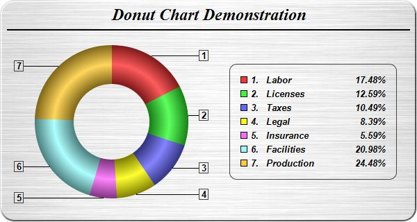

This example demonstrates a donut chart with ring shading effects. It also demonstrates brushed metal background, rounded frame, customized sector labels and using
CDML and
Parameter Substitution and Formatting to format legend text.
- A donut chart is the same as a pie chart, except that the PieChart.setDonutSize is used instead of PieChart.setPieSize.
- The brushed silver background is achieved by using Chart::brushedSilverColor to create the brushed silver color, then use it in PieChart.PieChart as the chart background color.
- The rounded frame is configured using BaseChart.setRoundedFrame.
- The sector labels are configured using PieChart.setLabelFormat to show the sector number. PieChart.setLabelStyle is used to set the label style. It returns a TextBox object representing the sector label prototype. The Box.setBackground method of the label prototype is then used to add black borders around the labels.
- The legend text is configured by calling the TextBox.setText method of the LegendBox object. The legend text template is specified using CDML and Parameter Substitution and Formatting as follows:
<*block,valign=top*>{={sector}+1}.<*advanceTo=22*><*block,width=120*>{label}<*/*><*block,width=40,halign=right*>{percent}<*/*>%
The starting "<*block,valign=top*>" means the different parts in the legend entry should be aligned to the top. This is necessarily because the second part of the legend entry (described below) can have multiple lines.
The first part of the legend entry is "{={sector}+1}.<*advanceTo=22*>", which means the show the sector number, then "tab" to the 22th pixel position. (In ChartDirector, the sector number starts from 0. So we add 1 to {sector} to make the displayed sector number to start from 1.)
The second part "<*block,width=120*>{label}<*/*>" which means to show the sector label in a 120 pixels block. If the label is wider than 120 pixels, it will be wrapped into multiple lines within the block.
The last part "<*block,width=40,halign=right*>{percent}<*/*>%" means to show the percentage in a 40 pixels block, with the contents right aligned.
The following is the command line version of the code in "cppdemo/donut". The MFC version of the code is in "mfcdemo/mfcdemo". The Qt Widgets version of the code is in "qtdemo/qtdemo". The QML/Qt Quick version of the code is in "qmldemo/qmldemo".
#include "chartdir.h"
int main(int argc, char *argv[])
{
// The data for the pie chart
double data[] = {25, 18, 15, 12, 8, 30, 35};
const int data_size = (int)(sizeof(data)/sizeof(*data));
// The labels for the pie chart
const char* labels[] = {"Labor", "Licenses", "Taxes", "Legal", "Insurance", "Facilities",
"Production"};
const int labels_size = (int)(sizeof(labels)/sizeof(*labels));
// Create a PieChart object of size 600 x 320 pixels. Set background color to brushed silver,
// with a 2 pixel 3D border. Use rounded corners of 20 pixels radius.
PieChart* c = new PieChart(600, 320, Chart::brushedSilverColor(), Chart::Transparent, 2);
c->setRoundedFrame(0xffffff, 20);
// Add a title using 18pt Times New Roman Bold Italic font. #Set top/bottom margins to 8 pixels.
TextBox* title = c->addTitle("Donut Chart Demonstration", "Times New Roman Bold Italic", 18);
title->setMargin(0, 0, 8, 8);
// Add a 2 pixels wide separator line just under the title
c->addLine(10, title->getHeight(), c->getWidth() - 11, title->getHeight(), Chart::LineColor, 2);
// Set donut center at (160, 175), and outer/inner radii as 110/55 pixels
c->setDonutSize(160, 175, 110, 55);
// Set the pie data and the pie labels
c->setData(DoubleArray(data, data_size), StringArray(labels, labels_size));
// Use ring shading effect for the sectors
c->setSectorStyle(Chart::RingShading);
// Use the side label layout method, with the labels positioned 16 pixels from the donut
// bounding box
c->setLabelLayout(Chart::SideLayout, 16);
// Show only the sector number as the sector label
c->setLabelFormat("{={sector}+1}");
// Set the sector label style to Arial Bold 10pt, with a dark grey (444444) border
c->setLabelStyle("Arial Bold", 10)->setBackground(Chart::Transparent, 0x444444);
// Add a legend box, with the center of the left side anchored at (330, 175), and using 10pt
// Arial Bold Italic font
LegendBox* b = c->addLegend(330, 175, true, "Arial Bold Italic", 10);
b->setAlignment(Chart::Left);
// Set the legend box border to dark grey (444444), and with rounded conerns
b->setBackground(Chart::Transparent, 0x444444);
b->setRoundedCorners();
// Set the legend box margin to 16 pixels, and the extra line spacing between the legend entries
// as 5 pixels
b->setMargin(16);
b->setKeySpacing(0, 5);
// Set the legend text to show the sector number, followed by a 120 pixels wide block showing
// the sector label, and a 40 pixels wide block showing the percentage
b->setText(
"<*block,valign=top*>{={sector}+1}.<*advanceTo=22*><*block,width=120*>{label}<*/*>"
"<*block,width=40,halign=right*>{percent}<*/*>%");
// Output the chart
c->makeChart("donut.jpg");
//free up resources
delete c;
return 0;
}
© 2023 Advanced Software Engineering Limited. All rights reserved.